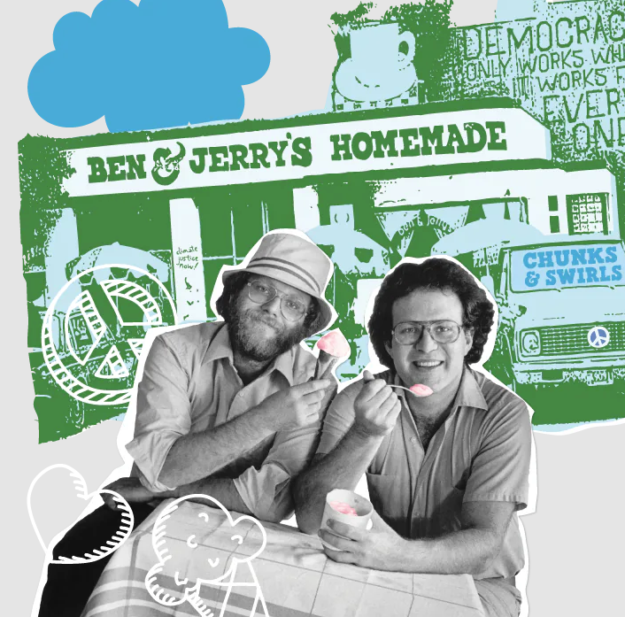

Ben and Jerry’s started in a renovated gas station in Burlington, Vermont, using what they knew from the one $5 ice cream course they took at Penn State. Today, they have about 100 flavors churning away to reach everyone and anyone. Me personally, I like Strawberry Cheesecake and Mud Cake. The crunchy bits and ice cream flavor give it such an amazing texture and taste that I just can never get enough of them. I absolutely detest when the toppings are soggy, like Americone Dream. But what does ChatGPT think about all of these flavors?

Ranking
To start off, I wanted to see what kind of ranking ChatGPT would create. It prefaced that “ranking all Ben & Jerry’s flavors is a fun but subjective task” as people have all kinds of preferences that would of course impavt what it pulls. Nonetheless, the top 10 flavors it spat out was as follows:
1. Half Baked
2. The Tonight Dough
3. Chocolate Chip Cookie Dough
4. Cherry Garcia
5. Phish Food
6. Americone Dream
7. Peanut Butter Cup
8. Netflix and Chill’d
9. Strawberry Cheesecake
10. New York Super Fudge Chunk
And like most lists, there are some honorable mentions that fell just a bit short, such as Gimme S’more!, Salted Caramel Core, and Chunky Monkey.
Best and Worst Flavors
I then wanted to see what flavor ChatGPT liked the most where after it considered flavor balance, texture, originality, and pure indulgence, it decided The Tonight Dough was it’s favorite. The reasoning? It has caramel, chocolate ice cream, cookie dough, chocolate cookie swirls, and peanut butter cookie dough! A little something for everyone in my opinion. And when asked about the worst flavor, it chose a discontinued flavor in many areas, Banana Split. It seems as though the banana ice cream base was either too artificial tasting or overpowering and that unlike all of the mix-ins in The Tonight Dough, the ones in Banana Split just had too much going on. There were fudge chunks, walnuts, cherries, and strawberries that fell flat when trying to replicate the taste of a banana split. One thing to note is that the flavor Sugar Plum was also considered as the worst.
.png)
.png)
A New Flavor?
The last thing I wanted to see was if ChatGPT could come up with a new flavor. In my mind, cannot create anything new. Everything is either regurgitated information from a single source or an attempt to combine and link multiples sources from every inch of the internet. I was, however, impressed that ChatGPT designed somewhat of a new flavor. It came up with:
🍰🔥 “Midnight Bake”
A celebration of warm homemade treats with a gooey, salty-sweet twist.
🥄 Flavor Profile:
Base: Toasted brown sugar ice cream 🍯 (like a warm cookie straight from the oven) Mix-ins: Chunks of molten fudge brownies 🍫
Swirls of salted caramel 🧂
Pieces of browned butter blondie dough 🍪
Bits of toasty oats & cinnamon crumble 🌾
Bonus swirl: Cookie butter ripple 🧁✨ for spice and creaminess
🎯 Why it works:
Hits that sweet-salty-spicy-rich spectrum
Feels like a hybrid of baking all your favorite treats at once
Great for fall/winter cozy vibes, sleepovers, or midnight cravings
Encore-worthy texture combos: gooey, chewy, crunchy, creamy
It’s worth noting he name Midnight Bake is a combination of already existing flavors Half Baked and Late Night Snack. But it does sound tasty!
Midnight Bake Imagined
I did want to see what the pint tub could possible look like, so I moved to Dall-E and used the prompt:
🖼️ Imagined Pint Design:
🎨 Name: Midnight Bake
🎨 Theme: Cozy, indulgent, and a little mysterious — like a late-night kitchen adventure.
Pint Artwork Description: Background: Midnight blue and burnt caramel tones, with a glowing oven light and baked goods scattered on a countertop next to a messy mixing bowl.
Centerpiece: A cartoon-style brownie and blondie wearing oven mitts high-fiving while standing on a swirl of golden caramel.
Details: Cookie crumbs scattered near the top
A cinnamon stick and whisk crossed like utensils of honor
The Ben & Jerry’s signature banner across the top
A tagline written under the name: “Brownies, blondies & late-night bliss.”
🍧 Scoop Description (The Ice Cream Itself): Imagine cracking into a pint and seeing:
A light golden-brown ice cream base with visible specks (toasted brown sugar)
Rich gooey caramel swirls winding across the surface
Big, dense brownie chunks and lighter, chewy blondie dough pieces peeking through
Thin streaks of cookie butter twirling through every other bite
A delicate oat crumble layering here and there like a pie topping baked inside
It came up with this image that I also removed the background to just display the tub itself. I will say, Dall-E did make this new ice cream flavor look good!
.jpg)
.png)